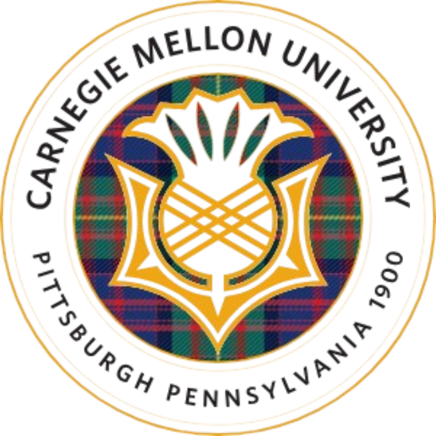
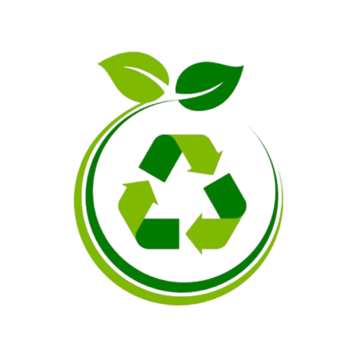

Hi! I'm Anwaya Wadnerkar
I grew up in a small town called Amravati, where curiosity was my constant companion. I’ve always loved asking questions, looking at things from a different perspective, and finding creative ways to solve problems. That instinct to think outside the box has shaped both who I am and how I work.
Over the years, I’ve found myself drawn to the sweet spot where technology meets people—where ideas turn into products, and products into impact. With a background in both tech and management, I enjoy switching between big-picture strategy and detail-oriented execution. Whether I’m collaborating with engineers, designers, or business stakeholders, I believe the best outcomes come from working together and listening deeply.
What drives me the most is the chance to create things that matter—things that simplify, empower, or delight. I’m naturally analytical, but I lead with empathy. I love structure, but I also leave room for serendipity and creativity.
If I had to sum up what I bring to the table: it’s a mix of curiosity, collaboration, and an unwavering desire to make things better. I'm excited by challenges, energized by people, and always looking for the next opportunity to grow and contribute.
Education
-

Carnegie Mellon University
Master of Engineering and Technology Innovation Management (Jan 2024 - Dec 2024) -
College of Engineering Pune
Bachelor of Technology (Aug 2016 - May 2020)
Work Experience
Accenture
Product Manager (Student) | Pittsburgh, PAAugust 2024 - December 2024
MedBridge
Product Manager Intern | Pittsburgh, PAMay 2024 – August 2024
Bajaj Finserv
Senior Product Manager - Information Security | Pune, IndiaMarch 2022 – Nov 2023
Bajaj Finserv
Product Manager - Information Security | Pune, IndiaOct 2020 – March 2022
Projects
-
 Medbridge - Value Proposition Benchmarking & Competitive Positioning
Medbridge - Value Proposition Benchmarking & Competitive Positioning
A comprehensive competitive analysis document evaluating the value propositions, pricing, technology, and outcomes of MedBridge Pathways versus leading digital musculoskeletal (MSK) care platforms like Vori Health, Hinge Health, and Sword Health.
Click here to view -
Medbridge - Sports Medicine GTM & Competitive Strategy
A strategic market analysis of the U.S. sports medicine industry with segmentation, JTBDs, competitive landscape, and GTM hypotheses for Pathways’ digital MSK care platform
Click here to view -
HP - Strategic Market Analysis & Opportunity Identification
A comprehensive analysis of HP’s brand, market trends, competitive positioning, and audience insights, culminating in strategic proposals to strengthen its market presence
Click here to view -
User Privacy Insights & Strategic Opportunities in Hospitality Apps
A research-driven study examining user privacy perceptions in hospitality apps, leading to actionable insights and recommendations for more transparent and user-centric data practices
Click here to view -
Concept Selection Matrix – Red Lipstick Product Strategy
A comparative analysis of product concepts for a red lipstick launch, using defined criteria to guide selection and strategic alignment
Click here to view -

Reimagining Urban Waste Management through Transparency and Engagement
A research-driven project analyzing gaps in waste management transparency and public involvement, culminating in a data-informed, stakeholder-backed solution
Click here to view
Contact
Email: anwayawad01@gmail.com